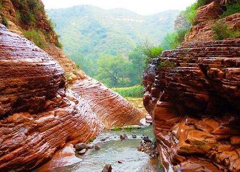
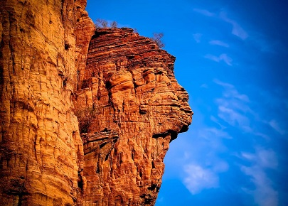
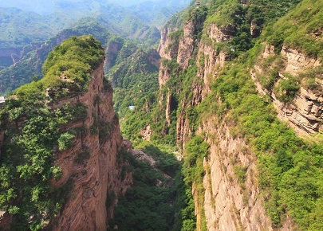
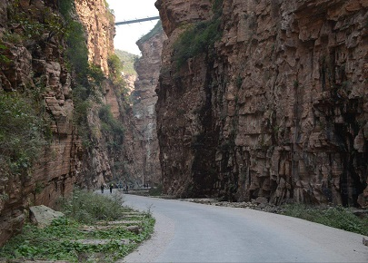

morly旅游网
抬头俯视，云崖倾扑，大有瞬间合拢之势
邢台大峡谷，是国家AAAA级景区、国家重点风景名胜区、中国国家地质公园。位于邢台县西南路罗镇贺家坪村，与山西的和顺县相望，距邢台市区65公里。具备垄断性石英砂岩峡谷群和典型性的嶂石岩砂岩地貌特点。游览面积18平方公里，由24条峡谷组成，其中长1000米以上的达8条。
邢台邢台邢台大峡谷，是国家AAAA级风景区、国家重点风景名胜区、中国国家地质公园，又称峡谷群、太行奇峡群,素来被地质学家们称为“世界奇峡”，景区内拥有灵芝、虫草、何首乌等十几种名贵药材，又被称为“长寿之谷”，大峡谷景区游览面积18平方公里，由24条峡谷组成，其中达到千米的有8条之多，主峡黄巢峡是群山之间的一道地堑，长达4000余米，峡深200余米，瀑布是峡谷的灵魂，在邢台大峡谷内，有大大小小的瀑布从岩石中穿过，奇峡群当前可游览的峡谷共五条，分别为长嘴龙门峡、流水峡、黄巢峡、朱汇峡和仙人谷。峡谷群夏季凉爽，七月平均气温24℃，有多种乔木，灌木和野生动物，深山植被繁茂，有上万亩的原始次生林，形成一个巨大的“天然氧吧”。除遗存的旧城郭、练兵场、跑马栈道外，村庄、古刹寺院和山岩名称都留下了与黄巢起义军有关的印迹和传说。抗日战争时期八路军129师曾在此建被服厂、造纸厂、印刷厂，仍在此留有遗址。
景区游览面积18平方公里，由24条峡谷组成，其中达到千米的有8条之多，主峡黄巢峡是群山之间的一道地堑，长达4000余米，峡深200余米，两壁对峙千仞，峡宽几米，最窄处只十几厘米。
峡谷群景区的水上垂钓、帐篷营地、篝火晚会、烤全羊、卡拉OK等特色的旅游项目，会使您如痴如醉，流连忘返；近百家的农家小院让您尽情体验山村生活。
长嘴峡
景区的第一条峡谷“长嘴峡”，俗称“一线天”，也叫贺坪峡，因前面的村名而得名。峡长800米，宽20米，两壁高70余米。长嘴峡中段有水库遗址，峡谷凹陷下去的山顶，不是天然形成的，而是1958年，在建水库大坝时我国采用前苏联专家的定向爆破技术炸成的，炸下一堆乱石后，苏联专家就不管了，在当时技术落后，资金困难，设备简陋的情况下，人们发扬人定胜天的革命精神，历经千辛万苦，终于把水库修了起来，并在壁上写下了“气死老龙王，愁死穿山甲”的豪言壮语，后来在1963年那场百年不遇的大洪水中被冲毁，所以很遗憾，如今只能看到水库的遗址。
 黄巢峡
黄巢峡，长4000米，一般宽1到2米，最窄处只有十几厘米，壁高150米，这里红岩绝壁，险峰对峙，黄巢曾在此聚兵起义，抬头仰望，青天一线，俯视脚下，水流不断，相隔不远便有一道瀑布，溪水清澈见底，清凉透骨。峡道里相隔不远，就有一石卡“喉”，每卡一处便是一道瀑布，每道瀑布下面都有一个大小不同的小石潭，深则几米，浅则1米。每逢雨季，瀑布成群，非常壮观，那时别说人走，就是猿猴也难以攀爬，真是“峡道难，难于上青天”。
 内容整理至网络，如有侵权，请联系我们！1255394075@qq.com